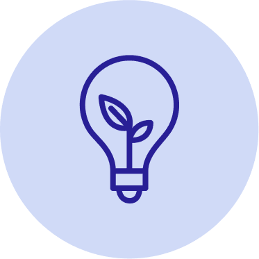
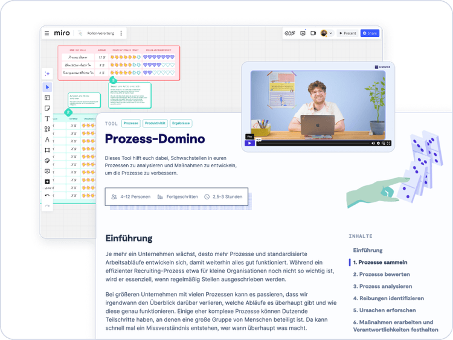

Business
ab 5 Nutzer*innen
Zugang für ausgewählte Nutzer*innen
Mit der 9 Spaces Workshop-Plattform werdet ihr zu Pionieren der Energiebranche, stärkt eure Zusammenarbeit und macht euer Unternehmen fit für die Arbeitswelt der Zukunft.

Lernt, wie ihr Prozesse modernisiert und Teams für Innovation begeistert.
⚡ Fachkräftemangel & Wissensverlust
87 % der Energieunternehmen kämpfen mit dem Mangel an qualifizierten Mitarbeitenden. Wenn Wissen nicht geteilt wird, stocken Projekte und Innovationen.
🔧 Komplexe Prozesse & steigende Anforderungen
Energiewende, neue Technologien und Regulatorik erhöhen die Komplexität. Oft fehlt der klare Überblick, besonders in cross-funktionalen Teams.
🔗 Zusammenarbeit über Abteilungsgrenzen hinweg
Netzbetrieb, Erzeugung, Verwaltung: Viele Bereiche arbeiten noch zu sehr im Silodenken. Das bremst Veränderung und Innovationskraft.
✅ Teams für Energiewende und Digitalisierung stärken
Mit 9 Spaces bringt ihr alle an einen Tisch: Von Netzbetrieb bis Verwaltung, bei Krisenmanagement oder Fördermittel-Projekten. So fördert ihr Austausch, überwindet Silos und legt die Basis für Innovation.
✅ Komplexe Energieprojekte strukturiert angehen
Unsere Workshop-Methoden helfen, große Vorhaben wie Netzausbau, Einführung neuer Technologien oder regulatorische Anforderungen in umsetzbare Schritte zu gliedern.
✅ Wissen sichern und Stakeholder-Kommunikation verbessern
Unsere 9 Spaces Tools helfen euch, Wissen, Entscheidungen und Prozesse transparent festzuhalten und die Einbindung interner sowie externer Stakeholder zu erleichtern.
Quellen: Agora Energiewende Jahresauswertung 2023, BDEW und EY Stadtwerkestudie 2024 von
Mit Workshop-Methoden für online und vor Ort bringt 9 Spaces Struktur in eure Energieprojekte, Innovationen und die Zusammenarbeit über Abteilungsgrenzen hinweg.

Geht mit unseren Workshops im Team eure wichtigsten Herausforderungen der Arbeitswelt in der Energiebranche an.
Zugang für ausgewählte Nutzer*innen
Du willst mehr über die 9 Spaces Features erfahren?
Unser Team unterstützt dich und dein Team gerne dabei, die perfekte Lösung für eure Organisation zu finden.